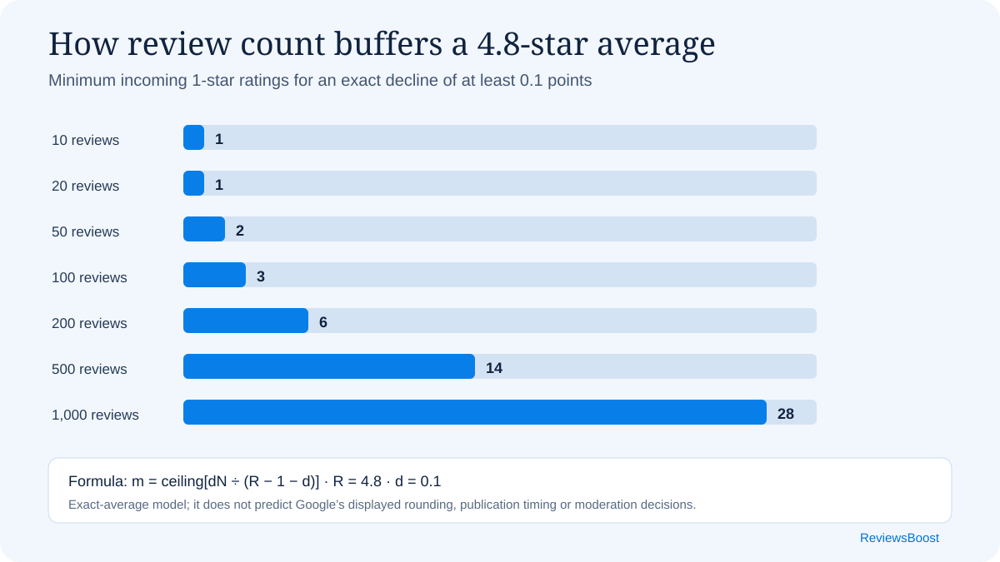

At an exact 4.8 average, a profile with 10 published ratings needs only one incoming one-star rating to fall by at least 0.1 points. A profile with 100 needs three; a profile with 500 needs 14; and a profile with 1,000 needs 28. Review count is a measurable buffer, even though it does not make any individual customer experience less important.
Business owners often ask a deceptively simple question: how much will one bad Google review change my rating? Most answers either use a single made-up business or calculate how many five-star ratings are needed afterward. Those examples are useful, but they do not measure resilience before the rating arrives.
This study takes a different approach. It asks how many incoming one-star ratings are required to reduce an exact starting average by at least 0.1, 0.2 or 0.5 points. We ran the calculation across 20 starting averages and seven review counts, producing 420 scenarios that anyone can reproduce from the published code.
Four findings from the 420 scenarios
- Review volume is the main buffer. At a 4.8 exact average, the 0.1-point threshold rises from one incoming one-star rating at 10 reviews to 28 at 1,000 reviews.
- Small profiles move in jumps. One one-star rating lowers a 4.8 average with 10 existing ratings by 0.345455 points. With 100 ratings, the same input changes the exact average by 0.037624 points.
- Higher averages are slightly more exposed to the same low score. With 100 existing ratings, an exact 3.0 average needs six incoming one-star ratings to decline by at least 0.1; an exact 4.9 average needs three. The one-star score lies farther below the higher starting average.
- Discrete ratings create unavoidable overshoot. At 4.8 with 100 ratings, two new one-star ratings are not enough for a 0.1 decline, while three take the exact average to 4.689320—a decline of 0.110680 rather than exactly 0.1.
{kind=link}

The 4.8-star resilience table
The clearest way to see the volume effect is to hold the starting average constant. The following table uses an exact 4.8 average and shows the minimum count that reaches or exceeds each decline. One fewer incoming rating does not reach the stated threshold.
| Starting ratings | Drop at least 0.1 | Drop at least 0.2 | Drop at least 0.5 |
|---|---|---|---|
| 10 | 1 | 1 | 2 |
| 20 | 1 | 2 | 4 |
| 50 | 2 | 3 | 8 |
| 100 | 3 | 6 | 16 |
| 200 | 6 | 12 | 31 |
| 500 | 14 | 28 | 76 |
| 1,000 | 28 | 56 | 152 |
Counts refer to published one-star ratings added to a profile whose pre-event exact average is 4.8. The calculation does not classify the ratings as genuine, false or policy-violating.
What one one-star rating does at 4.8
Thresholds answer a practical risk question, but the underlying movement is continuous. One one-star rating has the following effect when the exact starting average is 4.8:
| Starting ratings | New exact average | Exact decline |
|---|---|---|
| 10 | 4.454545 | 0.345455 |
| 20 | 4.619048 | 0.180952 |
| 50 | 4.725490 | 0.074510 |
| 100 | 4.762376 | 0.037624 |
| 200 | 4.781095 | 0.018905 |
| 500 | 4.792415 | 0.007585 |
| 1,000 | 4.796204 | 0.003796 |
The 1,000-rating profile experiences roughly one-ninety-first of the exact movement experienced by the 10-rating profile. That is the mathematical meaning of rating resilience here: the same new score represents a smaller share of a larger body of published ratings.
Calculate a custom resilience threshold
The published dataset fixes every incoming score at one star. This calculator applies the same method to any incoming rating from one to four stars. Use an exact average if you know it; a rounded number copied from the public profile produces only a scenario estimate.
Method and formula
Google states that a place or business review score is the average of all ratings published on Google for that profile, on a one-to-five scale. Google also notes that a new rating can take up to two weeks to appear in the updated score. Those statements establish the model used here; they do not disclose every interface or rounding detail. See Google’s review-score documentation.
Let R be the exact starting average, N the number of published ratings, s the value of every incoming rating, m the number of incoming ratings, and d the decline we want to measure. The new average is:
New average = (RN + ms) / (N + m)
The decline is m(R − s) / (N + m). Solving for the minimum
whole number of incoming ratings gives:
m = ceiling[dN / (R − s − d)]
Version 1.0 sets s to one star and enumerates 20 exact starting averages from 3.0 through 4.9, seven starting counts (10, 20, 50, 100, 200, 500 and 1,000), and three decline thresholds (0.1, 0.2 and 0.5). That produces 20 × 7 × 3 = 420 rows.
Every chosen starting count is divisible by 10. That matters because each one-decimal starting average can then correspond to a possible whole-number star total. For every row, the validation script checks two conditions: the published minimum reaches the target decline, and one fewer incoming rating does not.
Download and reproduce the study
- All 420 scenarios (CSV)
- Column definitions and provenance (W3C CSVW JSON)
- Calculation and row-validation code (JavaScript)
- Citation File Format record · BibTeX record
The original compilation, formula presentation, chart and dataset are licensed under CC BY 4.0. Attribute the underlying Google platform description to Google.
What this study does not prove
- It does not predict exactly when the public display will move. The model uses the exact arithmetic mean, while a public profile may show a rounded value and updates may be delayed.
- It does not estimate how often businesses receive one-star ratings. The 420 rows are scenarios, not a sample of 420 businesses.
- It does not determine whether a rating is genuine or violates policy. That requires evidence and a content-policy assessment.
- It does not measure sales, consumer sentiment or search position. Rating resilience is not the same thing as ranking resilience.
- It assumes the ratings included in the starting count and the new inputs remain published. Google may delay, filter or remove content.
How businesses should use the findings
The responsible response is not to chase a perfect score or flood a profile after criticism. It is to build a steady, representative stream of feedback from genuine customers. Google permits businesses to remind customers to leave reviews, but says those contributions must reflect genuine experiences and prohibits incentives in exchange for posting, changing or removing reviews. Google also advises businesses to value all reviews, noting that balanced feedback can feel more trustworthy. Its review-request guidance explains those boundaries.
Review volume has relevance beyond this calculation, but it should not be treated as a stand-alone ranking formula. Google describes local results as mainly based on relevance, distance and prominence; it says more reviews and positive ratings can help local ranking, not that a specific count guarantees a position. See Google’s local-ranking guidance.
A sudden cluster of low ratings can also be a content-integrity issue, but low sentiment alone is not proof of manipulation. Peer-reviewed research defines review bombing around coordinated action intended to alter a rating metric; it is a behavioural phenomenon, not simply a synonym for receiving criticism. The 2025 Quality & Quantity study provides that wider context.
Novelty and search note
Before publication, we searched the web for the phrases “review rating resilience,” “review resilience index,” “how many one-star reviews drop a rating by 0.1,” and related formula wording. We found calculators and articles that show how many five-star ratings offset one one-star rating. We did not identify a publication presenting this exact 420-scenario matrix of fixed decline thresholds.
That is a bounded search statement, not a claim that no similar work exists anywhere. Readers who know of earlier directly comparable work can send it to support@reviewsboost.ca. We will review it and update this note when appropriate.
How to cite this study
ReviewsBoost Editorial Team (2026), Google Review Rating Resilience Study: 420 Exact-Average Scenarios, version 1.0, ReviewsBoost, September 4, 2026, CC BY 4.0.
Detailed questions
How many one-star reviews will lower a 4.8 Google rating?
It depends on the exact starting average, the published rating count and how large a decline you mean. In this model, an exact 4.8 average with 100 ratings needs three new one-star ratings to decline by at least 0.1 points. With 500 ratings, it needs 14. These are exact-average thresholds, not promises about the rounded public display.
Does one one-star review always lower the rating by 0.1?
No. At an exact 4.8, one one-star input lowers the mean by about 0.345 points when there are 10 existing ratings, but only about 0.0038 when there are 1,000. The public display may not reveal either exact change.
Why does the starting average matter?
A one-star score is 3.9 points below a 4.9 average but only two points below a 3.0 average. With the same review count, the larger gap exerts more downward pressure on the mean.
Can this model identify a review attack?
No. It measures arithmetic only. Coordination, authenticity and policy eligibility require evidence about the accounts, timing, content and underlying customer experiences.
Sources
- Google Business Profile Help: Understand review scores for local places and businesses
- Google Business Profile Help: Tips to get more reviews
- Google Business Profile Help: Tips to improve local ranking
- Cantone, Tomaselli and Mazzeo: Review bombing and ideological polarization in online ratings
- Competition Bureau Canada: Online reviews and endorsements guidance